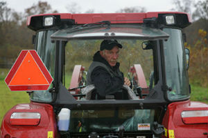

A team of MU Extension specialists is researching more productive and affordable ways to grow and use forage for livestock.
Gene Schmitz, who serves as the cattle specialist in the team's recent studies, said the goal is to see if forage can be produced more cost effectively by changing management.

Show-Me Select program focuses on health of heifers to improve overall quality
Ashley Jones
Missouri ranks third in the nation in the total number of beef cows, according to the U.S. Department of Agriculture.
That represents a significant portion of the state economy, worth $1.9 billion in 2017.